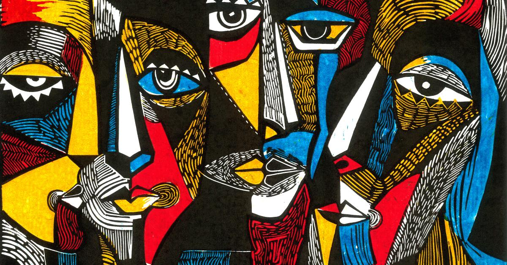
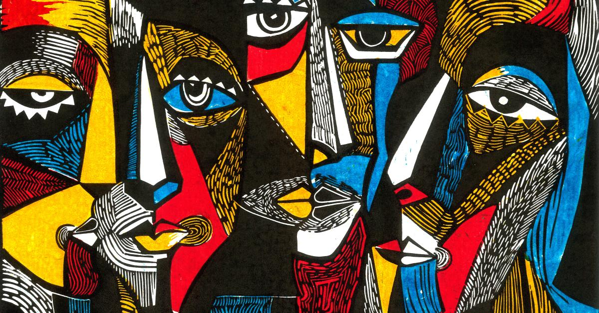

La Evolución de la Pintura Abstracta
Desde los inicios del siglo XX, el arte abstracto ha desafiado las normas tradicionales del arte visual. Explora las obras más influyentes que revolucionaron este estilo único.
Desde los inicios del siglo XX, el arte abstracto ha desafiado las normas tradicionales del arte visual. Explora las obras más influyentes que revolucionaron este estilo único.
